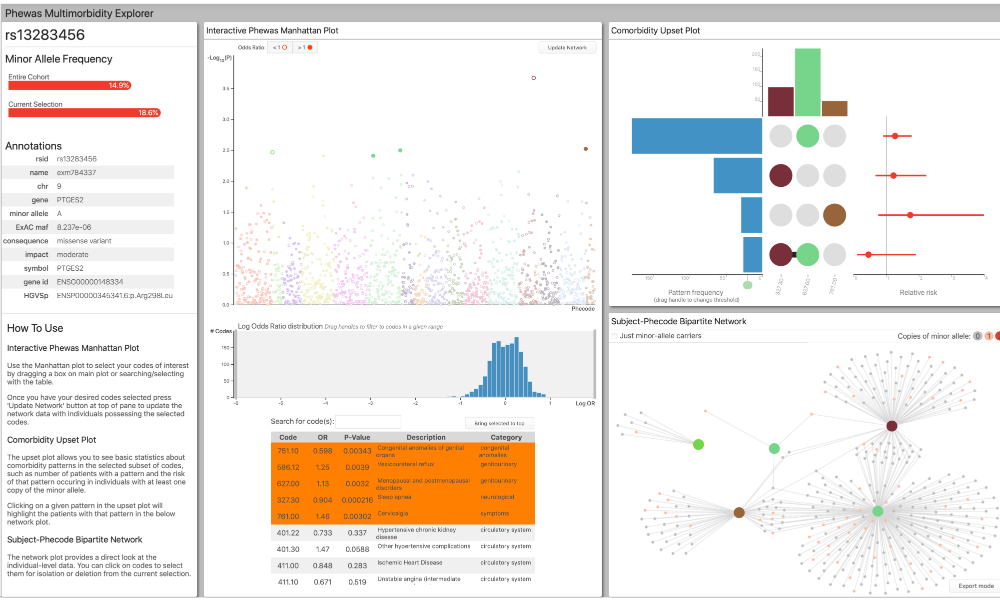
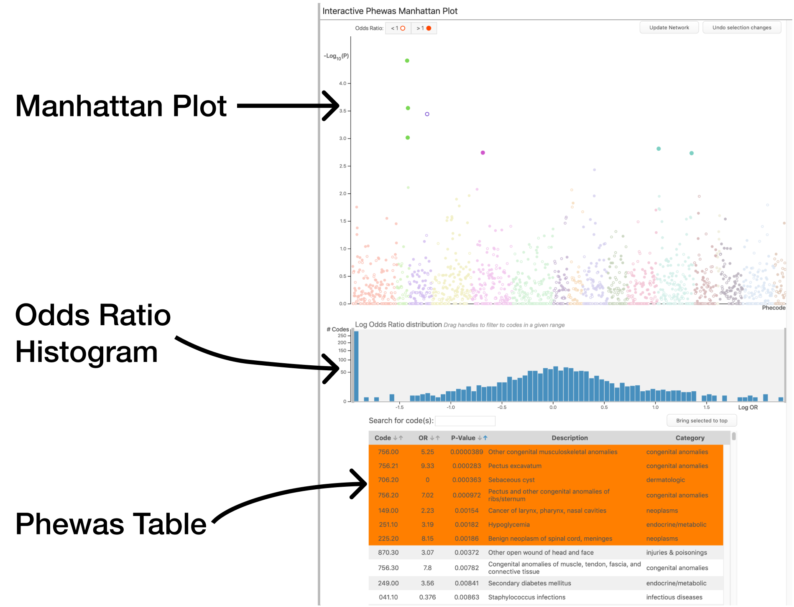
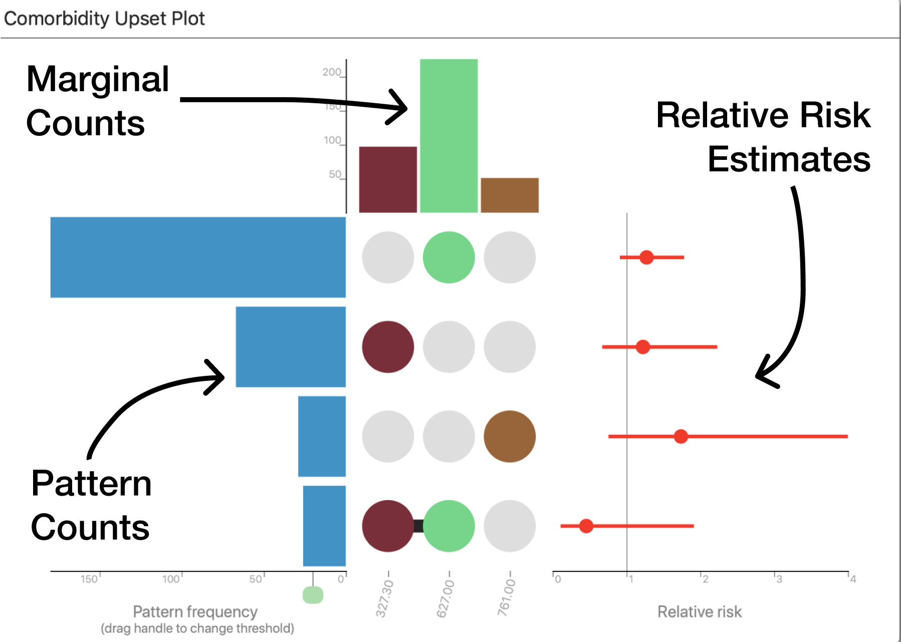
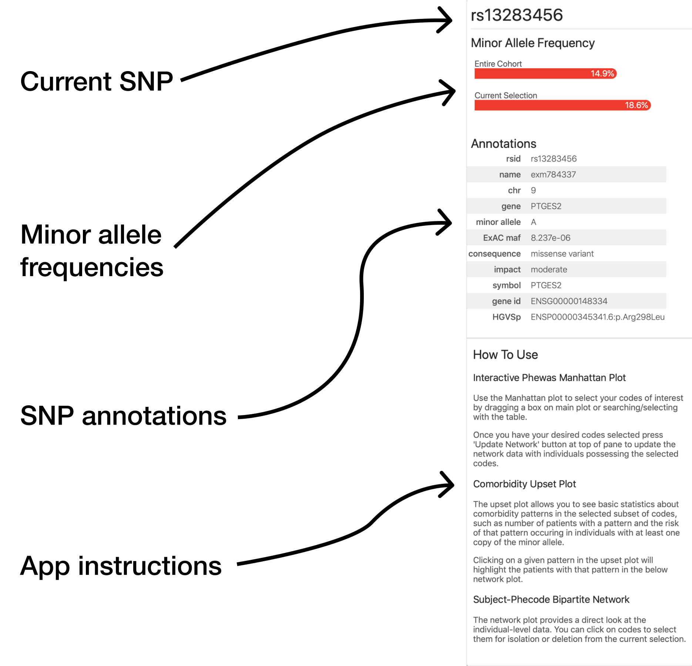
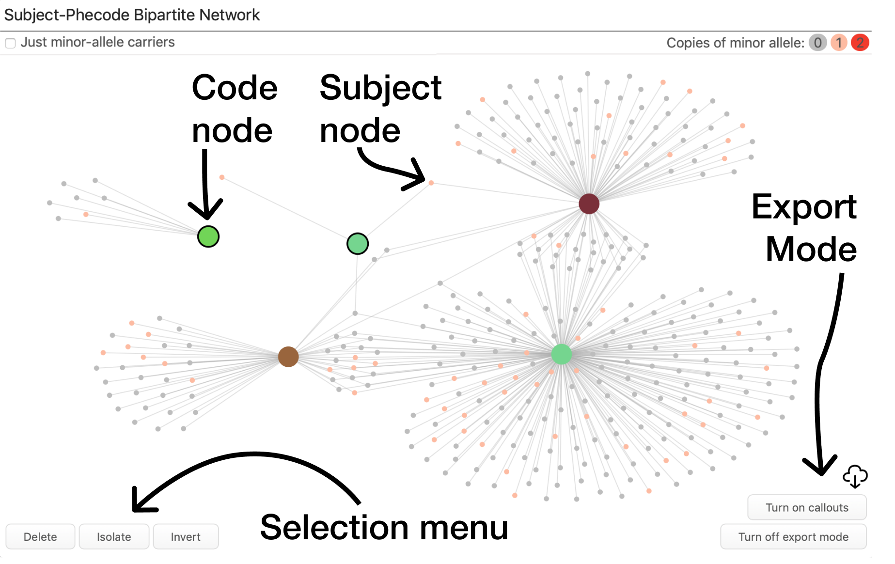

Main App

Interactive Phewas Manhattan Plot

Purpose
Visualizing results of entire Phewas analysis in graphical and table format and select codes to investigate comorbidities.
What’s Shown
Manhattan Plot The Interactive Phewas Manhattan plot contains a standard manhattan plot, which is a scatter plot with the x-axis containing each phecode tested for association with the SNP of interest, and the y-axis representing the p-value of the association (on the negative log base-10 scale.)
The points are colored according to their broad phecode category.
The plot contains a few features not normally found on manhattan plots. First the points themselves are either hollow or solid, corresponding to a negative association (OR < 1) or positive association (OR > 1) respectively. This allows the viewer to get an idea of general trends in association by category and subcodes.
Hovering over a given Phecode in the plot will show a tooltip containing all the information passed to the app in the Phewas results data (Odds ratio, p-value, ect.).
Odds Ratio Histogram In addition to showing positive and negative association in point shape, a histogram of the log-odds ratio of all tests is provided below the manhattan plot. In addition to showing the viewer if phecodes are generally positively or negatively associated with the SNP of interest, it contains a range selector that can be dragged to control which points are drawn to the manhattan plot based upon their odds ratio. E.g. if the histogram upper range is reduced to a log odds ratio of 0, only phecodes that had a negative association would be plotted on the manhattan plot. This allows the viewer to target only phecodes that had strong effects sizes.
Phewas Table Below the manhattan plot and odds ratio histogram is a table corresponding to all the results. This table contains columns for the code name, odds ratio, p-value, code description, and code category. The table can be sorted by all column values in addition to being searched for both code name and description.
Filtering codes
Manhattan Plot Codes can be selected in a variety of ways. The main method of interaction involves dragging a box around a region of codes on the manhattan plot. A common case is to select the top most significant codes by dragging a box across the upper portion of the plot. In addition to standard dragging to select there are two keyboard shortcuts that can modify selection. First, if the ‘a’ key is held down (for __a__dd) and a box is drawn the selection from the box is added to any previously selected codes. Second, if the ‘d’ key is held down (for __d__elete), and a box is drawn, any selected codes contained within the drawn box will be unselected.
Any codes outside of the current odds ratio bounds set by the histogram range-slider will not be selected.
Phewas Table Codes can be either added or removed from the selection by clicking or tapping on their row in the Phewas table. Codes that are currently selected are colored orange.
Comorbidity Upset Plot

Purpose
To visualize unique comorbidity patterns in currently selected Phecodes, along with association with the SNP of interest.
What’s Shown
The Comorbidity Upset Plot is an Upset plot that visualizes unique combinations of Phecodes seen in the subjects. The center of the visualization contains a matrix with the currently selected phecodes as columns and each row represents a pattern of phecodes seen in the individual-level data. A pattern is shown by a dot being filled in at each column corresponding to a code in the pattern.
Marginal Counts At the top of each Phecode column in the plot is a bar representing how many subjects had that code in the data. These bars can be hovered over to get a text-summary.
Pattern Counts At the left side of each pattern row, another bar is drawn corresponding to how many patients had the specific pattern in the data. (Note that if a pattern is a subset of another the bar represents that subjects that only had exactly the smaller pattern.) Below the x-axis of the pattern-counts bars is a handle that can be moved to change the threshold for minimum number of times seen needed for a pattern to be plotted. This is helpful when there are a large number of unique patterns but only ones with large sample sizes are of interest. Like with the marginal bars, more info is available in text form on hover over the patterns.
Relative Risk Estimates To the right of each pattern’s row is a point estimate and 95% confidence band of the relative risk of that pattern occurring given presence of at least one copy of the SNP of interest. This is estimated using the small sample adjustment for both point estimate and confidence interval, via the function riskratio.small in the epitools package.
Again, hovering over the interval shows details of plot in text format.
App Interaction
The upset plot can highlight individual-level data in the network plot. There are two forms this highlighting takes.
Code Highlighting By clicking on a column corresponding to a given code all subjects that have that code present in their phenomes will be highlighted on the network plot. This means if subject A had a phenome with codes i and j, and subject B had a phenome with codes i, j, and k, both would be highlighted when code i or j’s columns were selected.
Pattern Highlighting By clicking on a row corresponding to a given comorbidity pattern of codes, all subjects who possess that exact pattern in their phenomes will be selected. Returning to the example in the ‘Code Highlighting’ section, this means if the pattern of phecodes (i, j) was selected only subject A would be highlighted.
Highlights for both codes and patterns are reset when either another pattern is selected of the column/row is selected again.
Info Panel

Purpose
Show basic information about the current SNP of Interest including minor allele frequency and basic annotations, along with basic usage instructions for application.
What’s Shown
The info panel is broken into three main sections…
Minor Allele Frequencies The top of the panel shows two measures of the minor allele frequency (MAF) for the current SNP of interest. The first of two bars shows the MAF for the entire dataset provided for the app. I.e. what proportion of all subjects provided have at least one copy of the minor allele. The second bar shows the MAF for the subjects who have at least one of the currently selected phecodes.
SNP Annotations
Below the MAF chart is a table containing annotations about the current SNP. Currently these include the chromosome and gene the SNP resides in for all SNPs on the Illumina Exome chip.
Instructions This panel contains basic instructions on how to use the application.
Subject-Phecode Bipartite Network

Purpose
Provide a direct look at individual-level data, showing connections between subjects and their phecodes along with the status for the SNP of interest.
What’s shown
The Network Components The network is bipartite, with two different node types. The larger nodes correspond to the currently selected Phecodes, colored by their category as in the Manhattan and Upset plots. The smaller nodes represent individual subjects, colored by their number of copies of the minor allele for the SNP of interest. Edges are drawn from each subject to all the Phecodes present in their Phenome.
Layout The layout of the network is calculated in real time using a basic physics simulation that treats the edges of the network as springs and tries to find the layout with the lowest total tension in the system. This serves to place similar patients and phecodes near each other and acts as a psuedo-dimensionality-reduction technique.
Interaction The network can be panned and zoomed to focus on subsections or to zoom out for a broader picture. A small toggle is provided draw the network with only subjects possessing at least one copy of the minor allele, as a way to access potential differences in overall vs SNP-driven structure.
Like in the Interactive Phewas Manhattan plot, by mousing over a phecode’s node a tooltip is revealed with all the supplied information from supplied Phewas results data.
Export Mode The network plot can be exported to a SVG format for use in vector-editing software such as Adobe Illustrator or Inkscape to prepare for publication.
Export is enabled by clicking the ‘Export mode’ button in the bottom right of the plot. This re-renders the plot in vector format and also provides the option to add callouts labeling each Phecode by ID. These callouts are able to be positioned by dragging for further customization.
Once the plot is how it is desired the download icon is pressed and an SVG of the current view is downloaded to the user’s computer.
Due to the computational overhead of rendering the network in vector format, it is recommended that export mode is kept off until is needed to avoid slowing down the app.
App Interaction
The network plot can be used to fine-tune the app-wide selected Phecodes. This is done by clicking or tapping on a Phecode node in the network to select it. Once at least one node is selected an action menu appears in the lower left of the plot. Here the user can choose to remove the selected code(s), to isolate a pattern of selected codes, or to ‘invert’ a code.
Code Inversion When a code is inverted a subject is considered to ‘have’ the code if it is absent in their phenome. Visually in the network this is represented as a hollow node. By inverting a code you can frame questions in terms of negative relationships, potentially uncovering previously unseen relationships.